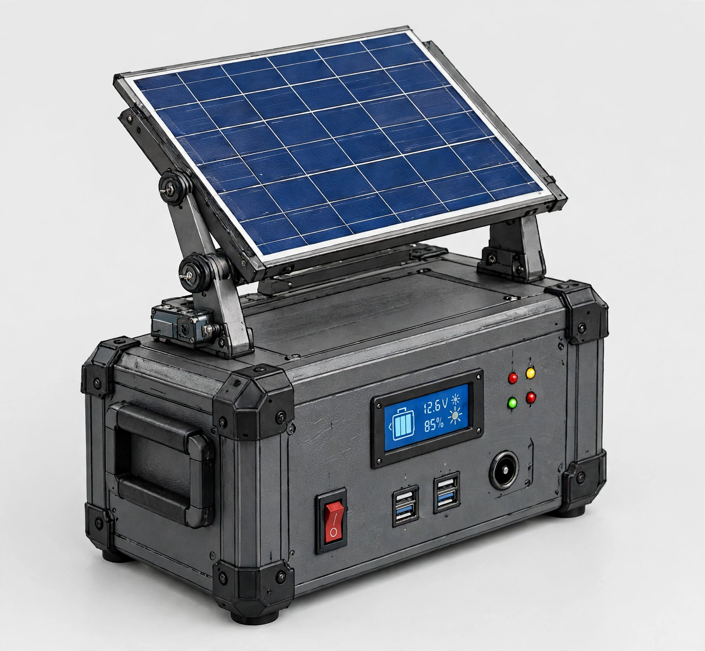

Captura el sol
Un panel integrado convierte la luz del día en energía para tu próxima aventura.
ENERGÍA PARA DONDE VAYAS
Una estación solar portátil para mantener tus esenciales encendidos, lejos de la toma de corriente.

Menos dependencia.
Más posibilidades.
Un panel integrado convierte la luz del día en energía para tu próxima aventura.
Consulta el estado de carga y organiza mejor el uso de tus dispositivos.
Un formato portátil pensado para llevar energía a donde más la necesitas.
TU PLAN, EN UN MINUTO
Ajusta la capacidad y el consumo para obtener una referencia de autonomía. Es una estimación orientativa, no una especificación del producto.
Por ejemplo, una lámpara LED y un teléfono.